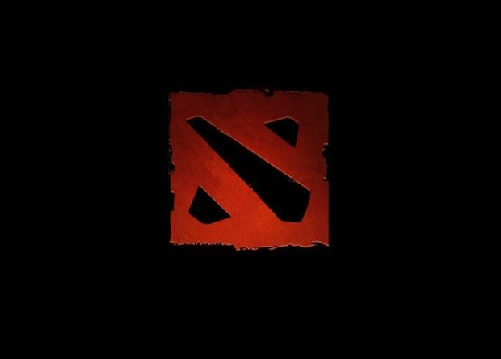
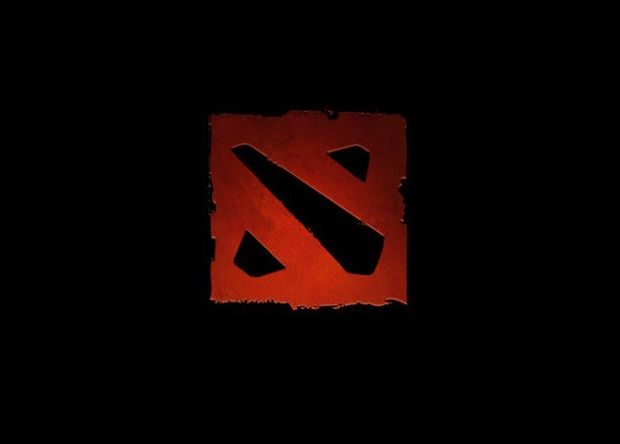

DOTA2.INFO
DOTA2.INFO
 


Тайминги Рошана
Рошан возрождается по случайному таймеру от 8 до 11 минут после смерти. Днем он появляется в юго-восточном углу карты, ночью – в северо-западном. Игра стартует днем, а день и ночь сменяются каждые 5 минут. Отталкиваясь от времени суток на карте, вы можете рассчитать где будет находиться Рошан.1 смерть – всегда Аегис;
2 смерть – всегда Аегис и Сыр;
3 смерть и далее – Аегис, Сыр и Аганим, если Рошан на стороне Сил Света/Рефрешер Шард, если Рошан на стороне Сил Тьмы. Read more...